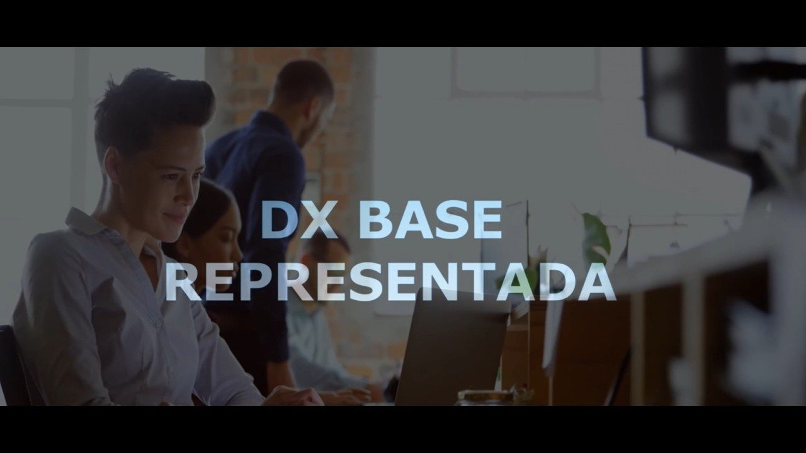

01Mapear
Base Representada
Revelamos quantas empresas deveriam estar na sua base hoje — e onde estão as lacunas de representação e de arrecadação.
A DX transforma dados públicos e da sua própria base em rotina de inteligência: para conhecer quem vocês representam, negociar com mais força e provar valor ao associado todos os meses — não só na eleição.
Os seis pilares de uma representação sustentada por dado: Base, Observatório, Relacionamento, Valor, Radar e Advocacy.

Cinco sinais que aparecem, quase sempre juntos, em entidades que ainda não têm rotina de inteligência — só ação sob demanda.
Ninguém sabe, com exatidão, quantas empresas deveriam estar na base hoje.
Quando a imprensa ou o poder público pede números do setor, consolidar o dado real vira uma corrida.
A comunicação sai igual para todos — sem segmentação por porte, região ou atividade.
Empresas recém-abertas não aparecem no radar para ações de relacionamento.
A entidade não identifica negócios e oportunidades concretas para seus representados.
Se você marcou três ou mais, o problema não é falta de esforço da equipe — é a ausência de uma rotina de inteligência. O Guia da Representação Inteligente traz um autodiagnóstico completo, com pontuação e classificação da sua entidade.
Fazer o autodiagnósticoNão vendemos dashboard avulso. Cada pilar resolve uma dor específica da gestão de entidades — e juntos formam uma rotina contínua de inteligência.
Revelamos quantas empresas deveriam estar na sua base hoje — e onde estão as lacunas de representação e de arrecadação.
Rotina de inteligência sempre pronta — leitura de cenário para diretoria, comunicação e imprensa, sem levantamento de última hora.
Comunicação por porte, região e atividade — com medição real de quem abre, responde e participa.
Benchmarks e conteúdos que provam, todo mês, por que vale a pena continuar associado — não só no boleto.
Licitações, projetos e conexões de negócio distribuídos direto para o comercial dos seus associados.
Evidência técnica para pleitos, consultas públicas e negociações — muda o tom da conversa com quem está do outro lado da mesa.
“Relatório feito na correria mostra o que já passou. Rotina de inteligência mostra o que está vindo.”
Toda entidade já viveu a mesma cena: a diretoria pede, na véspera de uma reunião, um levantamento rápido sobre o setor. A alternativa não é mais trabalho — é trabalho em outro ritmo, com leitura contínua pronta antes de alguém precisar perguntar.
A metodologia se repete, o dado muda: cada entidade recebe um mapeamento de fontes e indicadores exclusivos do próprio setor.
Representatividade e arrecadação de todos os sindicatos industriais do Brasil em base única.
Balancetes por rubrica, mapa de concentração e ranking de municípios do sistema financeiro.
171.112 proposições legislativas monitoradas por tipo, tramitação, autor, partido e UF.
Admissões, demissões e saldo de empregos por ocupação, região, porte e escolaridade.
Top 500 contribuintes de ICMS do estado, com variação de posições no ranking ano a ano.
Séries do Banco Central sobre atrasos e inadimplência, com evolução nominal e comparação anual.
Índice de força dos Sinapros por UF, com cinco dimensões de gestão e evolução mensal.
30.843 CNPJs de saúde cruzados com os estabelecimentos do CNES e a base de associados.
R$ 23,1 bilhões em crédito rural e cotações nas bolsas estaduais, para defesa de interesse.
Como sindicatos, associações e federações usam dados para fortalecer base, negociação e valor ao associado.
✓ com autodiagnóstico inclusoUm raciocínio em seis pilares, mais um autodiagnóstico de 12 perguntas para a entidade descobrir, em cinco minutos, se está Reativa, em Transição ou Estratégica.
O Guia da Representação Inteligente chega no seu e-mail corporativo em instantes. Enquanto isso, já dá para agendar o diagnóstico gratuito.
Seus dados são usados apenas para o envio do material e para contato comercial da DX.
Começamos com um Diagnóstico Express da Base Representada e do potencial de arrecadação — 30 minutos para revelar lacunas e abrir uma agenda prática de atuação.
Começamos com um Mini Observatório Setorial e um mapa de tendências e oportunidades — para demonstrar valor prático e construir o business case da sua associação.
Cada entidade recebe um mapeamento próprio das fontes públicas e privadas relevantes ao seu setor. O que muda de cliente para cliente não é a metodologia, é o conjunto de dados por trás dela.
Não. A DX entrega inteligência pronta para uso — para diretoria, comunicação e associados — sem que a entidade precise montar estrutura interna.
Trabalhamos com fontes públicas e oficiais (portais de transparência, IBGE, CNES, CONAB, Banco Central, entre outras) e com dados da própria base da entidade, sempre com tratamento seguro e sem exposição de dado sensível de terceiros.
Varia conforme os pilares combinados — trabalhamos com uma configuração Essencial e uma Completa. O valor exato sai do diagnóstico gratuito, depois de entender a realidade da sua base.